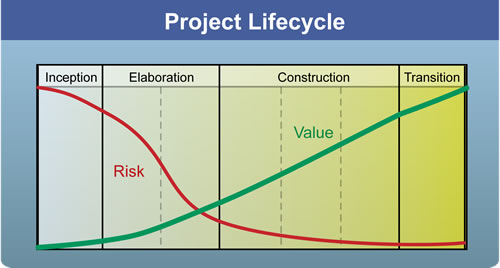

| Concept: Project Lifecycle |
 |
|
| Related Elements |
|---|
The project lifecycle provides stakeholders with oversight, transparency, and steering mechanisms to control project funding, scope, risk exposure, value provided, and other aspects of the process. Each iteration delivers a product increment, which provides an opportunity for stakeholders to understand what value has been delivered and how well the project is tracking. It also gives the development team the opportunity to make changes to the project to optimize the outcome. OpenUP organizes iterations into a set of phases. Each phase ends with a milestone aimed at providing oversight by raising and answering a set of questions that are typically critical to stakeholders:
If the answer is Yes to the above questions at the phase review, the project continues. If the answer is No, the phase is delayed (usually by adding an extra iteration) until a satisfactory answer is received, or the stakeholders may determine that the project should be cancelled. One of the objectives of the project lifecycle is to focus on two key stakeholder drivers: risk reduction and value creation. The OpenUP phases focus the team on risk reduction related to the questions to be answered at the end of the phase, while tracking value creation, see Figure below.  Risk reduction (red curve) and value creation (green curve) during the project lifecycle. Risk is a manifestation of the likelihood of unexpected things happening to the project, and risk stands in the way of value creation. Risk is directly proportional to uncertainty in estimates, and stakeholders typically want to know sooner rather than later what value the project can deliver in the stipulated time. In many cases, you reduce risk when you create value by implementing and testing the most critical capabilities. However, there are situations where risk reduction and immediate value creation are at odds with each other, see Balance competing priorities to maximize stakeholder value. |
This program and the accompanying materials are made available under the |